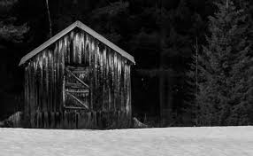

The Dunwich Horror
By H. P. Lovecraft
“Gorgons, and Hydras, and Chimaeras—dire stories of Celaeno and the Harpies—may reproduce themselves in the brain of superstition—but they were there before. They are transcripts, types—the archetypes are in us, and eternal. How else should the recital of that which we know in a waking sense to be false come to affect us at all? Is it that we naturally conceive terror from such objects, considered in their capacity of being able to inflict upon us bodily injury? O, least of all! These terrors are of older standing. They date beyond body—or without the body, they would have been the same. . . . That the kind of fear here treated is purely spiritual—that it is strong in proportion as it is objectless on earth, that it predominates in the period of our sinless infancy—are difficulties the solution of which might afford some probable insight into our ante-mundane condition, and a peep at least into the shadowland of pre-existence.”
—Charles Lamb: “Witches and Other Night-Fears”
I
When a traveller in north central Massachusetts takes the wrong fork at the junction of the Aylesbury pike just beyond Dean’s Corners he comes upon a lonely and curious country. The ground gets higher, and the brier-bordered stone walls press closer and closer against the ruts of the dusty, curving road. The trees of the frequent forest belts seem too large, and the wild weeds, brambles, and grasses attain a luxuriance not often found in settled regions. At the same time the planted fields appear singularly few and barren; while the sparsely scattered houses wear a surprisingly uniform aspect of age, squalor, and dilapidation. Without knowing why, one hesitates to ask directions from the gnarled, solitary figures spied now and then on crumbling doorsteps or on the sloping, rock-strown meadows. Those figures are so silent and furtive that one feels somehow confronted by forbidden things, with which it would be better to have nothing to do. When a rise in the road brings the mountains in view above the deep woods, the feeling of strange uneasiness is increased. The summits are too rounded and symmetrical to give a sense of comfort and naturalness, and sometimes the sky silhouettes with especial clearness the queer circles of tall stone pillars with which most of them are crowned.
Gorges and ravines of problematical depth intersect the way, and the crude wooden bridges always seem of dubious safety. When the road dips again there are stretches of marshland that one instinctively dislikes, and indeed almost fears at evening when unseen whippoorwills chatter and the fireflies come out in abnormal profusion to dance to the raucous, creepily insistent rhythms of stridently piping bull-frogs. The thin, shining line of the Miskatonic’s upper reaches has an oddly serpent-like suggestion as it winds close to the feet of the domed hills among which it rises.
As the hills draw nearer, one heeds their wooded sides more than their stone-crowned tops. Those sides loom up so darkly and precipitously that one wishes they would keep their distance, but there is no road by which to escape them. Across a covered bridge one sees a small village huddled between the stream and the vertical slope of Round Mountain, and wonders at the cluster of rotting gambrel roofs bespeaking an earlier architectural period than that of the neighbouring region. It is not reassuring to see, on a closer glance, that most of the houses are deserted and falling to ruin, and that the broken-steepled church now harbours the one slovenly mercantile establishment of the hamlet. One dreads to trust the tenebrous tunnel of the bridge, yet there is no way to avoid it. Once across, it is hard to prevent the impression of a faint, malign odour about the village street, as of the massed mould and decay of centuries. It is always a relief to get clear of the place, and to follow the narrow road around the base of the hills and across the level country beyond till it rejoins the Aylesbury pike. Afterward one sometimes learns that one has been through Dunwich.
Outsiders visit Dunwich as seldom as possible, and since a certain season of horror all the signboards pointing toward it have been taken down. The scenery, judged by any ordinary aesthetic canon, is more than commonly beautiful; yet there is no influx of artists or summer tourists. Two centuries ago, when talk of witch-blood, Satan-worship, and strange forest presences was not laughed at, it was the custom to give reasons for avoiding the locality. In our sensible age—since the Dunwich horror of 1928 was hushed up by those who had the town’s and the world’s welfare at heart—people shun it without knowing exactly why. Perhaps one reason—though it cannot apply to uninformed strangers—is that the natives are now repellently decadent, having gone far along that path of retrogression so common in many New England backwaters. They have come to form a race by themselves, with the well-defined mental and physical stigmata of degeneracy and inbreeding. The average of their intelligence is woefully low, whilst their annals reek of overt viciousness and of half-hidden murders, incests, and deeds of almost unnamable violence and perversity. The old gentry, representing the two or three armigerous families which came from Salem in 1692, have kept somewhat above the general level of decay; though many branches are sunk into the sordid populace so deeply that only their names remain as a key to the origin they disgrace. Some of the Whateleys and Bishops still send their eldest sons to Harvard and Miskatonic, though those sons seldom return to the mouldering gambrel roofs under which they and their ancestors were born.
No one, even those who have the facts concerning the recent horror, can say just what is the matter with Dunwich; though old legends speak of unhallowed rites and conclaves of the Indians, amidst which they called forbidden shapes of shadow out of the great rounded hills, and made wild orgiastic prayers that were answered by loud crackings and rumblings from the ground below. In 1747 the Reverend Abijah Hoadley, newly come to the Congregational Church at Dunwich Village, preached a memorable sermon on the close presence of Satan and his imps; in which he said:
“It must be allow’d, that these Blasphemies of an infernall Train of Daemons are Matters of too common Knowledge to be deny’d; the cursed Voices of Azazel and Buzrael, of Beelzebub and Belial, being heard now from under Ground by above a Score of credible Witnesses now living. I my self did not more than a Fortnight ago catch a very plain Discourse of evill Powers in the Hill behind my House; wherein there were a Rattling and Rolling, Groaning, Screeching, and Hissing, such as no Things of this Earth cou’d raise up, and which must needs have come from those Caves that only black Magick can discover, and only the Divell unlock.”
Mr. Hoadley disappeared soon after delivering this sermon; but the text, printed in Springfield, is still extant. Noises in the hills continued to be reported from year to year, and still form a puzzle to geologists and physiographers. Other traditions tell of foul odours near the hill-crowning circles of stone pillars, and of rushing airy presences to be heard faintly at certain hours from stated points at the bottom of the great ravines; while still others try to explain the Devil’s Hop Yard—a bleak, blasted hillside where no tree, shrub, or grass-blade will grow. Then too, the natives are mortally afraid of the numerous whippoorwills which grow vocal on warm nights. It is vowed that the birds are psychopomps lying in wait for the souls of the dying, and that they time their eerie cries in unison with the sufferer’s struggling breath. If they can catch the fleeing soul when it leaves the body, they instantly flutter away chittering in daemoniac laughter; but if they fail, they subside gradually into a disappointed silence.
These tales, of course, are obsolete and ridiculous; because they come down from very old times. Dunwich is indeed ridiculously old—older by far than any of the communities within thirty miles of it. South of the village one may still spy the cellar walls and chimney of the ancient Bishop house, which was built before 1700; whilst the ruins of the mill at the falls, built in 1806, form the most modern piece of architecture to be seen. Industry did not flourish here, and the nineteenth-century factory movement proved short-lived. Oldest of all are the great rings of rough-hewn stone columns on the hill-tops, but these are more generally attributed to the Indians than to the settlers. Deposits of skulls and bones, found within these circles and around the sizeable table-like rock on Sentinel Hill, sustain the popular belief that such spots were once the burial-places of the Pocumtucks; even though many ethnologists, disregarding the absurd improbability of such a theory, persist in believing the remains Caucasian.
II
It was in the township of Dunwich, in a large and partly inhabited farmhouse set against a hillside four miles from the village and a mile and a half from any other dwelling, that Wilbur Whateley was born at 5 A.M. on Sunday, the second of February, 1913. This date was recalled because it was Candlemas, which people in Dunwich curiously observe under another name; and because the noises in the hills had sounded, and all the dogs of the countryside had barked persistently, throughout the night before. Less worthy of notice was the fact that the mother was one of the decadent Whateleys, a somewhat deformed, unattractive albino woman of thirty-five, living with an aged and half-insane father about whom the most frightful tales of wizardry had been whispered in his youth. Lavinia Whateley had no known husband, but according to the custom of the region made no attempt to disavow the child; concerning the other side of whose ancestry the country folk might—and did—speculate as widely as they chose. On the contrary, she seemed strangely proud of the dark, goatish-looking infant who formed such a contrast to her own sickly and pink-eyed albinism, and was heard to mutter many curious prophecies about its unusual powers and tremendous future.
Lavinia was one who would be apt to mutter such things, for she was a lone creature given to wandering amidst thunderstorms in the hills and trying to read the great odorous books which her father had inherited through two centuries of Whateleys, and which were fast falling to pieces with age and worm-holes. She had never been to school, but was filled with disjointed scraps of ancient lore that Old Whateley had taught her. The remote farmhouse had always been feared because of Old Whateley’s reputation for black magic, and the unexplained death by violence of Mrs. Whateley when Lavinia was twelve years old had not helped to make the place popular. Isolated among strange influences, Lavinia was fond of wild and grandiose day-dreams and singular occupations; nor was her leisure much taken up by household cares in a home from which all standards of order and cleanliness had long since disappeared.
There was a hideous screaming which echoed above even the hill noises and the dogs’ barking on the night Wilbur was born, but no known doctor or midwife presided at his coming. Neighbours knew nothing of him till a week afterward, when Old Whateley drove his sleigh through the snow into Dunwich Village and discoursed incoherently to the group of loungers at Osborn’s general store. There seemed to be a change in the old man—an added element of furtiveness in the clouded brain which subtly transformed him from an object to a subject of fear—though he was not one to be perturbed by any common family event. Amidst it all he shewed some trace of the pride later noticed in his daughter, and what he said of the child’s paternity was remembered by many of his hearers years afterward.
“I dun’t keer what folks think—ef Lavinny’s boy looked like his pa, he wouldn’t look like nothin’ ye expeck. Ye needn’t think the only folks is the folks hereabaouts. Lavinny’s read some, an’ has seed some things the most o’ ye only tell abaout. I calc’late her man is as good a husban’ as ye kin find this side of Aylesbury; an’ ef ye knowed as much abaout the hills as I dew, ye wouldn’t ast no better church weddin’ nor her’n. Let me tell ye suthin’—some day yew folks’ll hear a child o’ Lavinny’s a-callin’ its father’s name on the top o’ Sentinel Hill!”
The only persons who saw Wilbur during the first month of his life were old Zechariah Whateley, of the undecayed Whateleys, and Earl Sawyer’s common-law wife, Mamie Bishop. Mamie’s visit was frankly one of curiosity, and her subsequent tales did justice to her observations; but Zechariah came to lead a pair of Alderney cows which Old Whateley had bought of his son Curtis. This marked the beginning of a course of cattle-buying on the part of small Wilbur’s family which ended only in 1928, when the Dunwich horror came and went; yet at no time did the ramshackle Whateley barn seem overcrowded with livestock. There came a period when people were curious enough to steal up and count the herd that grazed precariously on the steep hillside above the old farmhouse, and they could never find more than ten or twelve anaemic, bloodless-looking specimens. Evidently some blight or distemper, perhaps sprung from the unwholesome pasturage or the diseased fungi and timbers of the filthy barn, caused a heavy mortality amongst the Whateley animals. Odd wounds or sores, having something of the aspect of incisions, seemed to afflict the visible cattle; and once or twice during the earlier months certain callers fancied they could discern similar sores about the throats of the grey, unshaven old man and his slatternly, crinkly-haired albino daughter.
In the spring after Wilbur’s birth Lavinia resumed her customary rambles in the hills, bearing in her misproportioned arms the swarthy child. Public interest in the Whateleys subsided after most of the country folk had seen the baby, and no one bothered to comment on the swift development which that newcomer seemed every day to exhibit. Wilbur’s growth was indeed phenomenal, for within three months of his birth he had attained a size and muscular power not usually found in infants under a full year of age. His motions and even his vocal sounds shewed a restraint and deliberateness highly peculiar in an infant, and no one was really unprepared when, at seven months, he began to walk unassisted, with falterings which another month was sufficient to remove.
It was somewhat after this time—on Hallowe’en—that a great blaze was seen at midnight on the top of Sentinel Hill where the old table-like stone stands amidst its tumulus of ancient bones. Considerable talk was started when Silas Bishop—of the undecayed Bishops—mentioned having seen the boy running sturdily up that hill ahead of his mother about an hour before the blaze was remarked. Silas was rounding up a stray heifer, but he nearly forgot his mission when he fleetingly spied the two figures in the dim light of his lantern. They darted almost noiselessly through the underbrush, and the astonished watcher seemed to think they were entirely unclothed. Afterward he could not be sure about the boy, who may have had some kind of a fringed belt and a pair of dark trunks or trousers on. Wilbur was never subsequently seen alive and conscious without complete and tightly buttoned attire, the disarrangement or threatened disarrangement of which always seemed to fill him with anger and alarm. His contrast with his squalid mother and grandfather in this respect was thought very notable until the horror of 1928 suggested the most valid of reasons.
The next January gossips were mildly interested in the fact that “Lavinny’s black brat” had commenced to talk, and at the age of only eleven months. His speech was somewhat remarkable both because of its difference from the ordinary accents of the region, and because it displayed a freedom from infantile lisping of which many children of three or four might well be proud. The boy was not talkative, yet when he spoke he seemed to reflect some elusive element wholly unpossessed by Dunwich and its denizens. The strangeness did not reside in what he said, or even in the simple idioms he used; but seemed vaguely linked with his intonation or with the internal organs that produced the spoken sounds. His facial aspect, too, was remarkable for its maturity; for though he shared his mother’s and grandfather’s chinlessness, his firm and precociously shaped nose united with the expression of his large, dark, almost Latin eyes to give him an air of quasi-adulthood and well-nigh preternatural intelligence. He was, however, exceedingly ugly despite his appearance of brilliancy; there being something almost goatish or animalistic about his thick lips, large-pored, yellowish skin, coarse crinkly hair, and oddly elongated ears. He was soon disliked even more decidedly than his mother and grandsire, and all conjectures about him were spiced with references to the bygone magic of Old Whateley, and how the hills once shook when he shrieked the dreadful name of Yog-Sothoth in the midst of a circle of stones with a great book open in his arms before him. Dogs abhorred the boy, and he was always obliged to take various defensive measures against their barking menace.
III
Meanwhile Old Whateley continued to buy cattle without measurably increasing the size of his herd. He also cut timber and began to repair the unused parts of his house—a spacious, peaked-roofed affair whose rear end was buried entirely in the rocky hillside, and whose three least-ruined ground-floor rooms had always been sufficient for himself and his daughter. There must have been prodigious reserves of strength in the old man to enable him to accomplish so much hard labour; and though he still babbled dementedly at times, his carpentry seemed to shew the effects of sound calculation. It had already begun as soon as Wilbur was born, when one of the many tool-sheds had been put suddenly in order, clapboarded, and fitted with a stout fresh lock. Now, in restoring the abandoned upper story of the house, he was a no less thorough craftsman. His mania shewed itself only in his tight boarding-up of all the windows in the reclaimed section—though many declared that it was a crazy thing to bother with the reclamation at all. Less inexplicable was his fitting up of another downstairs room for his new grandson—a room which several callers saw, though no one was ever admitted to the closely boarded upper story. This chamber he lined with tall, firm shelving; along which he began gradually to arrange, in apparently careful order, all the rotting ancient books and parts of books which during his own day had been heaped promiscuously in odd corners of the various rooms.
“I made some use of ’em,” he would say as he tried to mend a torn black-letter page with paste prepared on the rusty kitchen stove, “but the boy’s fitten to make better use of ’em. He’d orter hev ’em as well sot as he kin, for they’re goin’ to be all of his larnin’.”
When Wilbur was a year and seven months old—in September of 1914—his size and accomplishments were almost alarming. He had grown as large as a child of four, and was a fluent and incredibly intelligent talker. He ran freely about the fields and hills, and accompanied his mother on all her wanderings. At home he would pore diligently over the queer pictures and charts in his grandfather’s books, while Old Whateley would instruct and catechise him through long, hushed afternoons. By this time the restoration of the house was finished, and those who watched it wondered why one of the upper windows had been made into a solid plank door. It was a window in the rear of the east gable end, close against the hill; and no one could imagine why a cleated wooden runway was built up to it from the ground. About the period of this work’s completion people noticed that the old tool-house, tightly locked and windowlessly clapboarded since Wilbur’s birth, had been abandoned again. The door swung listlessly open, and when Earl Sawyer once stepped within after a cattle-selling call on Old Whateley he was quite discomposed by the singular odour he encountered—such a stench, he averred, as he had never before smelt in all his life except near the Indian circles on the hills, and which could not come from anything sane or of this earth. But then, the homes and sheds of Dunwich folk have never been remarkable for olfactory immaculateness.
The following months were void of visible events, save that everyone swore to a slow but steady increase in the mysterious hill noises. On May-Eve of 1915 there were tremors which even the Aylesbury people felt, whilst the following Hallowe’en produced an underground rumbling queerly synchronised with bursts of flame—“them witch Whateleys’ doin’s”—from the summit of Sentinel Hill. Wilbur was growing up uncannily, so that he looked like a boy of ten as he entered his fourth year. He read avidly by himself now; but talked much less than formerly. A settled taciturnity was absorbing him, and for the first time people began to speak specifically of the dawning look of evil in his goatish face. He would sometimes mutter an unfamiliar jargon, and chant in bizarre rhythms which chilled the listener with a sense of unexplainable terror. The aversion displayed toward him by dogs had now become a matter of wide remark, and he was obliged to carry a pistol in order to traverse the countryside in safety. His occasional use of the weapon did not enhance his popularity amongst the owners of canine guardians.
The few callers at the house would often find Lavinia alone on the ground floor, while odd cries and footsteps resounded in the boarded-up second story. She would never tell what her father and the boy were doing up there, though once she turned pale and displayed an abnormal degree of fear when a jocose fish-peddler tried the locked door leading to the stairway. That peddler told the store loungers at Dunwich Village that he thought he heard a horse stamping on that floor above. The loungers reflected, thinking of the door and runway, and of the cattle that so swiftly disappeared. Then they shuddered as they recalled tales of Old Whateley’s youth, and of the strange things that are called out of the earth when a bullock is sacrificed at the proper time to certain heathen gods. It had for some time been noticed that dogs had begun to hate and fear the whole Whateley place as violently as they hated and feared young Wilbur personally.
In 1917 the war came, and Squire Sawyer Whateley, as chairman of the local draft board, had hard work finding a quota of young Dunwich men fit even to be sent to a development camp. The government, alarmed at such signs of wholesale regional decadence, sent several officers and medical experts to investigate; conducting a survey which New England newspaper readers may still recall. It was the publicity attending this investigation which set reporters on the track of the Whateleys, and caused the Boston Globe and Arkham Advertiser to print flamboyant Sunday stories of young Wilbur’s precociousness, Old Whateley’s black magic, the shelves of strange books, the sealed second story of the ancient farmhouse, and the weirdness of the whole region and its hill noises. Wilbur was four and a half then, and looked like a lad of fifteen. His lips and cheeks were fuzzy with a coarse dark down, and his voice had begun to break.
Earl Sawyer went out to the Whateley place with both sets of reporters and camera men, and called their attention to the queer stench which now seemed to trickle down from the sealed upper spaces. It was, he said, exactly like a smell he had found in the tool-shed abandoned when the house was finally repaired; and like the faint odours which he sometimes thought he caught near the stone circles on the mountains. Dunwich folk read the stories when they appeared, and grinned over the obvious mistakes. They wondered, too, why the writers made so much of the fact that Old Whateley always paid for his cattle in gold pieces of extremely ancient date. The Whateleys had received their visitors with ill-concealed distaste, though they did not dare court further publicity by a violent resistance or refusal to talk.
IV
For a decade the annals of the Whateleys sink indistinguishably into the general life of a morbid community used to their queer ways and hardened to their May-Eve and All-Hallows orgies. Twice a year they would light fires on the top of Sentinel Hill, at which times the mountain rumblings would recur with greater and greater violence; while at all seasons there were strange and portentous doings at the lonely farmhouse. In the course of time callers professed to hear sounds in the sealed upper story even when all the family were downstairs, and they wondered how swiftly or how lingeringly a cow or bullock was usually sacrificed. There was talk of a complaint to the Society for the Prevention of Cruelty to Animals; but nothing ever came of it, since Dunwich folk are never anxious to call the outside world’s attention to themselves.
About 1923, when Wilbur was a boy of ten whose mind, voice, stature, and bearded face gave all the impressions of maturity, a second great siege of carpentry went on at the old house. It was all inside the sealed upper part, and from bits of discarded lumber people concluded that the youth and his grandfather had knocked out all the partitions and even removed the attic floor, leaving only one vast open void between the ground story and the peaked roof. They had torn down the great central chimney, too, and fitted the rusty range with a flimsy outside tin stovepipe.
In the spring after this event Old Whateley noticed the growing number of whippoorwills that would come out of Cold Spring Glen to chirp under his window at night. He seemed to regard the circumstance as one of great significance, and told the loungers at Osborn’s that he thought his time had almost come.
“They whistle jest in tune with my breathin’ naow,” he said, “an’ I guess they’re gittin’ ready to ketch my soul. They know it’s a-goin’ aout, an’ dun’t calc’late to miss it. Yew’ll know, boys, arter I’m gone, whether they git me er not. Ef they dew, they’ll keep up a-singin’ an’ laffin’ till break o’ day. Ef they dun’t they’ll kinder quiet daown like. I expeck them an’ the souls they hunts fer hev some pretty tough tussles sometimes.”
On Lammas Night, 1924, Dr. Houghton of Aylesbury was hastily summoned by Wilbur Whateley, who had lashed his one remaining horse through the darkness and telephoned from Osborn’s in the village. He found Old Whateley in a very grave state, with a cardiac action and stertorous breathing that told of an end not far off. The shapeless albino daughter and oddly bearded grandson stood by the bedside, whilst from the vacant abyss overhead there came a disquieting suggestion of rhythmical surging or lapping, as of the waves on some level beach. The doctor, though, was chiefly disturbed by the chattering night birds outside; a seemingly limitless legion of whippoorwills that cried their endless message in repetitions timed diabolically to the wheezing gasps of the dying man. It was uncanny and unnatural—too much, thought Dr. Houghton, like the whole of the region he had entered so reluctantly in response to the urgent call.
Toward one o’clock Old Whateley gained consciousness, and interrupted his wheezing to choke out a few words to his grandson.
“More space, Willy, more space soon. Yew grows—an’ that grows faster. It’ll be ready to sarve ye soon, boy. Open up the gates to Yog-Sothoth with the long chant that ye’ll find on page 751 of the complete edition, an’ then put a match to the prison. Fire from airth can’t burn it nohaow.”
He was obviously quite mad. After a pause, during which the flock of whippoorwills outside adjusted their cries to the altered tempo while some indications of the strange hill noises came from afar off, he added another sentence or two.
“Feed it reg’lar, Willy, an’ mind the quantity; but dun’t let it grow too fast fer the place, fer ef it busts quarters or gits aout afore ye opens to Yog-Sothoth, it’s all over an’ no use. Only them from beyont kin make it multiply an’ work. . . . Only them, the old uns as wants to come back. . . .”
But speech gave place to gasps again, and Lavinia screamed at the way the whippoorwills followed the change. It was the same for more than an hour, when the final throaty rattle came. Dr. Houghton drew shrunken lids over the glazing grey eyes as the tumult of birds faded imperceptibly to silence. Lavinia sobbed, but Wilbur only chuckled whilst the hill noises rumbled faintly. “They didn’t git him,” he muttered in his heavy bass voice.
Wilbur was by this time a scholar of really tremendous erudition in his one-sided way, and was quietly known by correspondence to many librarians in distant places where rare and forbidden books of old days are kept. He was more and more hated and dreaded around Dunwich because of certain youthful disappearances which suspicion laid vaguely at his door; but was always able to silence inquiry through fear or through use of that fund of old-time gold which still, as in his grandfather’s time, went forth regularly and increasingly for cattle-buying. He was now tremendously mature of aspect, and his height, having reached the normal adult limit, seemed inclined to wax beyond that figure. In 1925, when a scholarly correspondent from Miskatonic University called upon him one day and departed pale and puzzled, he was fully six and three-quarters feet tall.
Through all the years Wilbur had treated his half-deformed albino mother with a growing contempt, finally forbidding her to go to the hills with him on May-Eve and Hallowmass; and in 1926 the poor creature complained to Mamie Bishop of being afraid of him.
“They’s more abaout him as I knows than I kin tell ye, Mamie,” she said, “an’ naowadays they’s more nor what I know myself. I vaow afur Gawd, I dun’t know what he wants nor what he’s a-tryin’ to dew.”
hat Hallowe’en the hill noises sounded louder than ever, and fire burned on Sentinel Hill as usual; but people paid more attention to the rhythmical screaming of vast flocks of unnaturally belated whippoorwills which seemed to be assembled near the unlighted Whateley farmhouse. After midnight their shrill notes burst into a kind of pandaemoniac cachinnation which filled all the countryside, and not until dawn did they finally quiet down. Then they vanished, hurrying southward where they were fully a month overdue. What this meant, no one could quite be certain till later. None of the country folk seemed to have died—but poor Lavinia Whateley, the twisted albino, was never seen again.
In the summer of 1927 Wilbur repaired two sheds in the farmyard and began moving his books and effects out to them. Soon afterward Earl Sawyer told the loungers at Osborn’s that more carpentry was going on in the Whateley farmhouse. Wilbur was closing all the doors and windows on the ground floor, and seemed to be taking out partitions as he and his grandfather had done upstairs four years before. He was living in one of the sheds, and Sawyer thought he seemed unusually worried and tremulous. People generally suspected him of knowing something about his mother’s disappearance, and very few ever approached his neighbourhood now. His height had increased to more than seven feet, and shewed no signs of ceasing its development.